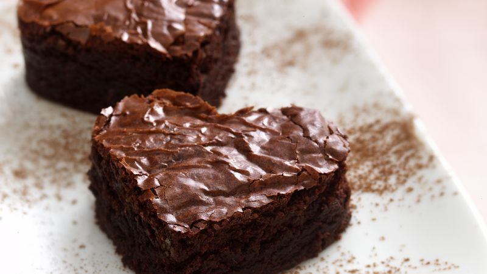

Brownie Recipe

Heart-shaped brownies on a plate
With a crackled top and a rich, dark color, it's an irresistible sight. Take a bite, and you'll experience the ultimate chocolate indulgence. The brownie is soft and fudgy, with a melt-in-your-mouth texture that delivers pure chocolatey bliss. It's filled with pockets of molten chocolate and has a slight crispness around the edges, adding a delightful contrast. Whether enjoyed alone or with a scoop of vanilla ice cream, this brownie is a heavenly treat that satisfies your sweetest cravings.
Ingredients
- 1 cup (225g) unsalted butter
- 2 cups (400g) granulated sugar
- 4 large eggs
- 1 teaspoon vanilla extract
- 1 cup (120g) all-purpose flour
- 3/4 cup (75g) cocoa powder
- 1/2 teaspoon salt
- 1 cup (175g) chocolate chips or chopped chocolate (optional)
Instructions
- Preheat your oven to 350°F (175°C). Grease a 9x9-inch (23x23cm) baking pan or line it with parchment paper for easier removal.
- In a microwave-safe bowl, melt the butter. Once melted, add the granulated sugar and stir until well combined.
- Add the eggs one at a time, mixing well after each addition. Stir in the vanilla extract.
- In a separate bowl, whisk together the flour, cocoa powder, and salt. Gradually add this dry mixture to the wet ingredients, stirring until just combined. Be careful not to overmix.
- If desired, fold in the chocolate chips or chopped chocolate to add extra chocolatey goodness to your brownies.
- Pour the brownie batter into the prepared baking pan, spreading it evenly.
- Bake in the preheated oven for approximately 25-30 minutes, or until a toothpick inserted into the center comes out with a few moist crumbs. Remember that baking times may vary, so keep an eye on them starting around the 20-minute mark.
- Once baked, remove the brownies from the oven and allow them to cool completely in the pan before cutting into hearts or squares.
- Serve and enjoy your homemade chocolate brownies! They can be stored in an airtight container at room temperature for several days.
Back to Home